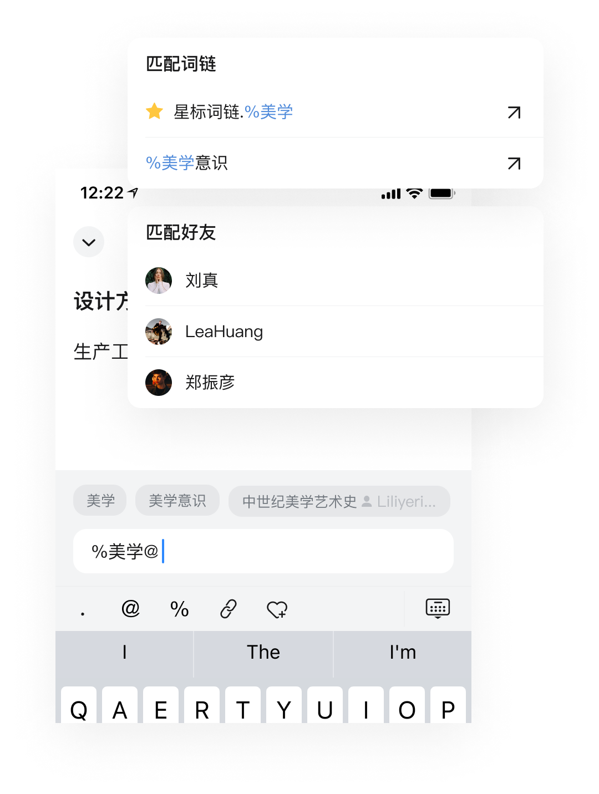
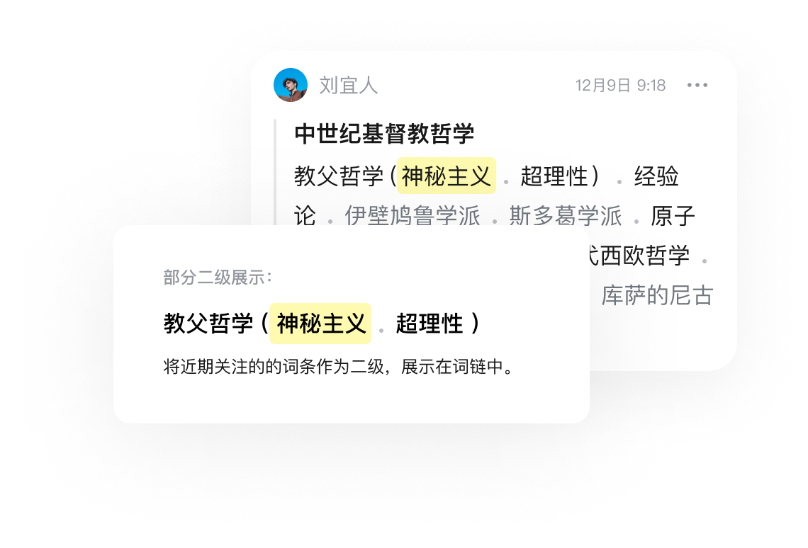

编辑能力
当你有个灵感或要记录一些事情时，网状笔记可以轻松输入内容创建成一条词链，并且可以简单地
对“词条/词链”进行搜索、高亮、完成等操作，如果你有更多的内容和想法也可以一键添加链接或填写
备注。
检索能力
网状笔记具有很强的检索和管理内容的能力，只要输入关键字就可以快速查找到相应词链，也可以将你词条汇总成一条聚合命令，然后加入到星标词链中进行更有效的管理。

组织能力
根据个人使用情况调整词链中某些词条的排序和二级显示，引用更多相关的词链来组织自己最关心的事务，也可以将你不想要的词链解除。

拓展能力
根据个人使用情况调整词链中某些词条的排序和二级显示，引用更多相关的词链来组织自己最关心的事务，也可以将你不想要的词链解除。